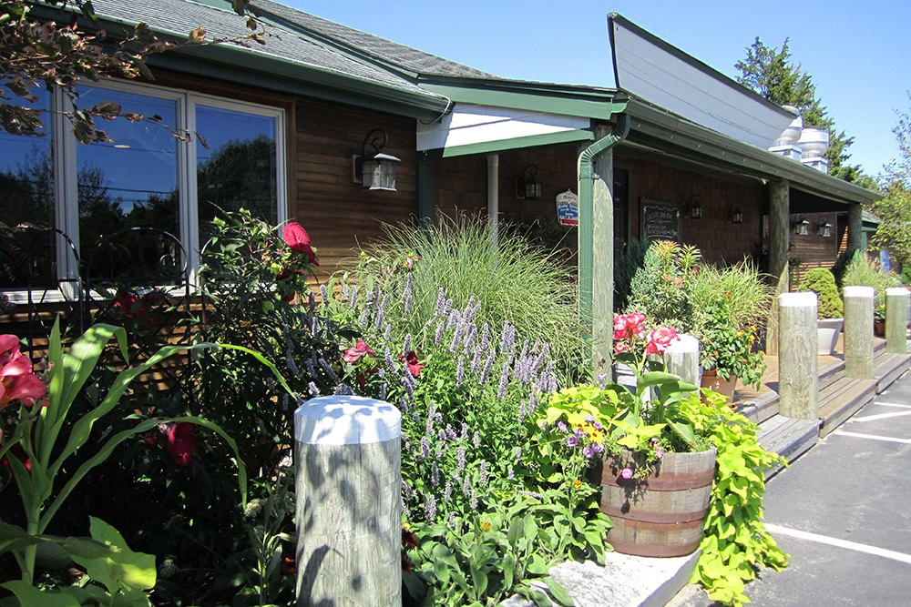
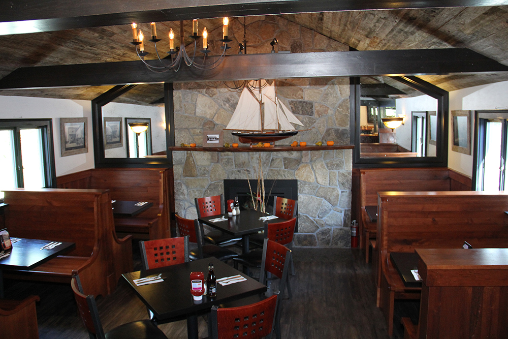
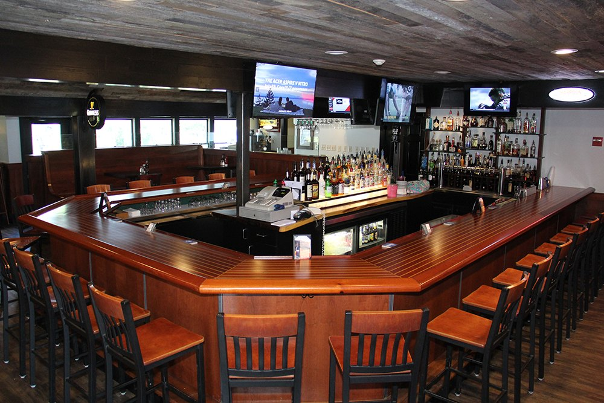

New England favorites
Clam chowder, fish and chips, baked scallops, and seafood worth settling in for.
Explore seafoodCharlestown, Rhode Island · Since 2000
Pull up a chair at The Cove. A neighborhood gathering place for coastal favorites, familiar faces, and another reason to stay a little longer.

A taste of The Cove
From a bowl of chowder to a leisurely dinner, there’s a seat at the table for every appetite.
Explore every dish, with descriptions and prices.
View the full menu
Family-run. Community-minded.
The Cove opened on October 4, 2000, with a simple idea: make people feel welcome. That spirit is still at the heart of this family-run restaurant on Old Post Road.
Gather by the fireplace for a meal with family, catch the Sox at the bar, or settle in for a conversation with friends. Whether it’s your first visit or your usual spot, we’re glad you’re here.
Come spend some time with usMake a night of it
Join Jeffrey Thomas for Friday night karaoke at The Cove. Come for dinner, stay for the music. Call for this week’s start time and details.
Take a look around
A welcoming bar, warm wood, and room to unwind. This is The Cove.
